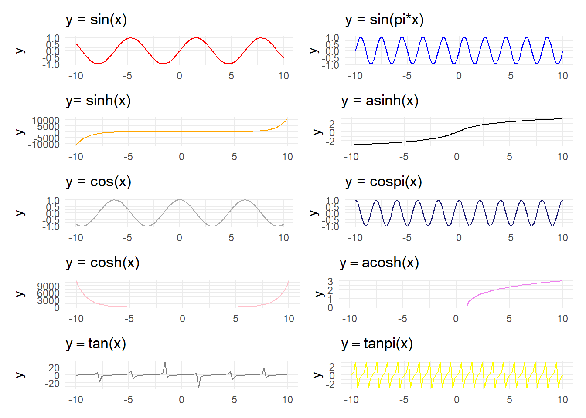

Chapter 1 수식 → 그래프1
1.1 지수함수 그래프 (Kittler 2019)
지수함수를 -10에서 10까지 그래프를 그려 시각화한다.
\[y=\exp(x)\]
수식을 geom_function()에 넣고 정의역을 scale_x_continuous()에 넣게 되면 해당 정의역 -10 ~ +10까지 그래프로 시각화를 한다.
library(tidyverse)
# exp_tbl <- expand_grid(x_range = -10:10)
#
# exp_tbl %>%
# ggplot(aes(x_range)) +
# geom_density() +
# geom_function(fun = function(x) exp(x))
ggplot() +
geom_density() +
scale_x_continuous(limits = c(-10,10)) +
geom_function(fun = function(x) exp(x) ) +
theme_light() +
labs(x="", y="")1.2 간단한 함수
간단한 10개의 함수를 ggplot 함수를 사용해서 시각화할 수 있다. geom_function 에 수학 함수를
수학표현식으로 고쳐 작성한다. 그리고, latex2exp를 사용해서 간단한 \(LaTeX\) 수식을 ggplot에 수식으로 표현하여 넣는다. 10개의 수식 그래프를 patchwork를 사용하여 한자의 그래프로 그려 넣는다.
- \(y = x\)
- \(y = |x|\)
- \(y = x^2\)
- \(y = x^3\)
- \(y = x^4\)
- \(y = x^5\)
- \(y = \sqrt{x}\)
- \(y = \sqrt[3]{x}\)
- \(y = \frac{1}{x}\)
- \(y = \frac{1}{x^2}\)
library(patchwork)
library(latex2exp)
theme_set(theme_minimal())
simple_eq_01 <- ggplot() +
scale_x_continuous(limits = c(-10,10)) +
geom_function(fun = function(x) x, color="red" ) +
labs(title = TeX(c("y=x")))
simple_eq_02 <- ggplot() +
scale_x_continuous(limits = c(-10,10)) +
geom_function(fun = function(x) abs(x), color="blue" ) +
labs(title = TeX(c("y=|x|")))
simple_eq_03 <- ggplot() +
scale_x_continuous(limits = c(-10,10)) +
geom_function(fun = function(x) x^2, color="orange" ) +
labs(title = TeX(c("y=x^2")))
simple_eq_04 <- ggplot() +
scale_x_continuous(limits = c(-10,10)) +
geom_function(fun = function(x) x^3, color="black" ) +
labs(title = TeX(c("y=x^3")))
simple_eq_05 <- ggplot() +
scale_x_continuous(limits = c(-10,10)) +
geom_function(fun = function(x) x^4, color="darkgray" ) +
labs(title = TeX(c("y=x^4")))
simple_eq_06 <- ggplot() +
scale_x_continuous(limits = c(-10,10)) +
geom_function(fun = function(x) x^5, color="midnightblue" ) +
labs(title = TeX(c("y=x^5")))
simple_eq_07 <- ggplot() +
scale_x_continuous(limits = c(-10,10)) +
geom_function(fun = function(x) x^(1/2), color="pink" ) +
labs(title = TeX(c("y = \\sqrt[2]_{x}")))
simple_eq_08 <- ggplot() +
scale_x_continuous(limits = c(-10,10)) +
geom_function(fun = function(x) x^(1/3), color="violet" ) +
labs(title = TeX(c("$y = \\sqrt[3]_{x}$")))
simple_eq_09 <- ggplot() +
scale_x_continuous(limits = c(-10,10)) +
geom_function(fun = function(x) 1 / x, color="gray50" ) +
labs(title = TeX(c("$y = \\frac{1}{x}$")))
simple_eq_10 <- ggplot() +
scale_x_continuous(limits = c(-10,10)) +
geom_function(fun = function(x) 1 / (x)^2, color="yellow" ) +
labs(title = TeX(c("$y = \\frac{1}{x^2}$")))
( simple_eq_01 + simple_eq_02 ) /
( simple_eq_03 + simple_eq_04 ) /
( simple_eq_05 + simple_eq_06 ) /
( simple_eq_07 + simple_eq_08 ) /
( simple_eq_09 + simple_eq_10 ) 1.3 지수와 로그 함수
다양한 지수와 로그 함수를 시각화해보자.
- \(y = x!\)
- \(y = 2^x\)
- \(y = \frac{1}{\sqrt{x}}\)
- \(y = exp(-x)\)
- \(y = log(x)\)
- \(y = log_2 (x)\)
- \(y = log_{10} (x)\)
- \(y = x \times log(x)\)
- \(y = exp(x)\)
- \(y = log(x)^2\)
simple_eq_11 <- ggplot() +
scale_x_continuous(limits = c(-10,10)) +
geom_function(fun = function(x) factorial(x), color="red" ) +
labs(title = TeX(c("y=x!")))
simple_eq_12 <- ggplot() +
scale_x_continuous(limits = c(-10,10)) +
geom_function(fun = function(x) 2^x, color="blue" ) +
labs(title = TeX(c("y=2^x")))
simple_eq_13 <- ggplot() +
scale_x_continuous(limits = c(-10,10)) +
geom_function(fun = function(x) 1 / sqrt(x), color="orange" ) +
labs(title = TeX(c("y=\\frac{1}{\\sqrt{x}}")))
simple_eq_14 <- ggplot() +
scale_x_continuous(limits = c(-10,10)) +
geom_function(fun = function(x) exp(-x), color="black" ) +
labs(title = TeX(c("y=exp(-x)")))
simple_eq_15 <- ggplot() +
scale_x_continuous(limits = c(-10,10)) +
geom_function(fun = function(x) log(x), color="darkgray" ) +
labs(title = TeX(c("y=log(x)")))
simple_eq_16 <- ggplot() +
scale_x_continuous(limits = c(-10,10)) +
geom_function(fun = function(x) log2(x), color="midnightblue" ) +
labs(title = TeX(c("y=log_2 (x)")))
simple_eq_17 <- ggplot() +
scale_x_continuous(limits = c(-10,10)) +
geom_function(fun = function(x) log10(x), color="pink" ) +
labs(title = TeX(c("y = log_{10} (x)")))
simple_eq_18 <- ggplot() +
scale_x_continuous(limits = c(-10,10)) +
geom_function(fun = function(x) x * log(x), color="violet" ) +
labs(title = TeX(c("$y = x log(x)")))
simple_eq_19 <- ggplot() +
scale_x_continuous(limits = c(-10,10)) +
geom_function(fun = function(x) exp(x), color="gray50" ) +
labs(title = TeX(c("$y = exp(x)$")))
simple_eq_10 <- ggplot() +
scale_x_continuous(limits = c(-10,10)) +
geom_function(fun = function(x) log(x)^2, color="yellow" ) +
labs(title = TeX(c("$y = log(x)^2")))
( simple_eq_11 + simple_eq_12 ) /
( simple_eq_13 + simple_eq_14 ) /
( simple_eq_15 + simple_eq_16 ) /
( simple_eq_17 + simple_eq_18 ) /
( simple_eq_19 + simple_eq_10 ) 1.4 다양한 활성화 함수
다양한 활성화(activation) 함수를 시각화해보자.
- \(y = \frac{1}{1+exp(-x)} : Sigmoid Function\)
- \(y = \frac{10}{1+exp(-x)} : 10 X Sigmoid Function\)
- \(y = tanh(x)\)
- \(y = \frac{exp(x)}{\sum{exp(x)}} : Softmax\)
- \(y = rectifier(x)\)
- \(y= softplus(x)\)
- \(y = sign(x)\)
- \(y = floor(x)\)
- \(y = round(x)\)
- \(y = ceiling(x)\)
simple_eq_21 <- ggplot() +
scale_x_continuous(limits = c(-10,10)) +
geom_function(fun = function(x) 1 / (1 + exp(-x)), color="red" ) +
labs(title = TeX(c("y=\\frac{1}{1+exp(-x)} : Sigmoid Function")))
simple_eq_22 <- ggplot() +
scale_x_continuous(limits = c(-10,10)) +
geom_function(fun = function(x) 10 / (1 + exp(-x)), color="blue" ) +
labs(title = TeX(c("y = \\frac{10}{1+exp(-x)} : 10 X Sigmoid Function")))
simple_eq_23 <- ggplot() +
scale_x_continuous(limits = c(-10,10)) +
geom_function(fun = function(x) tanh(x), color="orange" ) +
labs(title = TeX(c("y= tanh(x)")))
simple_eq_24 <- ggplot() +
scale_x_continuous(limits = c(-10,10)) +
geom_function(fun = function(x) exp(x) / sum(exp(x)), color="black" ) +
labs(title = TeX(c("y = \\frac{exp(x)}{\\sum{exp(x)}} : Softmax")))
simple_eq_25 <- ggplot() +
scale_x_continuous(limits = c(-10,10)) +
geom_function(fun = function(x) pmax(0, x), color="darkgray" ) +
labs(title = TeX(c("y = rectifier(x)")))
simple_eq_26 <- ggplot() +
scale_x_continuous(limits = c(-10,10)) +
geom_function(fun = function(x) log(1 + exp(x)), color="midnightblue" ) +
labs(title = TeX(c("y= softplus(x)")))
simple_eq_27 <- ggplot() +
scale_x_continuous(limits = c(-10,10)) +
geom_function(fun = function(x) sign(x), color="pink" ) +
labs(title = TeX(c("y = sign(x)")))
simple_eq_28 <- ggplot() +
scale_x_continuous(limits = c(-10,10)) +
geom_function(fun = function(x) floor(x), color="violet" ) +
labs(title = TeX(c("$y = floor(x)")))
simple_eq_29 <- ggplot() +
scale_x_continuous(limits = c(-10,10)) +
geom_function(fun = function(x) round(x), color="gray50" ) +
labs(title = TeX(c("$y = round(x)$")))
simple_eq_30 <- ggplot() +
scale_x_continuous(limits = c(-10,10)) +
geom_function(fun = function(x) ceiling(x), color="yellow" ) +
labs(title = TeX(c("$y = ceiling(x)")))
( simple_eq_21 + simple_eq_22 ) /
( simple_eq_23 + simple_eq_24 ) /
( simple_eq_25 + simple_eq_26 ) /
( simple_eq_27 + simple_eq_28 ) /
( simple_eq_29 + simple_eq_30 ) 1.5 삼각 함수
다양한 삼각(trigonometric) 함수를 시각화해보자.
- \(y = sin(x)\)
- \(y = sin(pi*x)\)
- \(y= sinh(x)\)
- \(y = asinh(x)\)
- \(y = cos(x)\)
- \(y = cospi(x)\)
- \(y = cosh(x)\)
- \(y = acosh(x)\)
- \(y = tan(x)\)
- \(y = tanpi(x)\)
simple_eq_31 <- ggplot() +
scale_x_continuous(limits = c(-10,10)) +
geom_function(fun = function(x) sin(x), color="red" ) +
labs(title = TeX(c("y = sin(x)")))
simple_eq_32 <- ggplot() +
scale_x_continuous(limits = c(-10,10)) +
geom_function(fun = function(x) sinpi(x), color="blue" ) +
labs(title = TeX(c("y = sin(pi*x)")))
simple_eq_33 <- ggplot() +
scale_x_continuous(limits = c(-10,10)) +
geom_function(fun = function(x) sinh(x), color="orange" ) +
labs(title = TeX(c("y= sinh(x)")))
simple_eq_34 <- ggplot() +
scale_x_continuous(limits = c(-10,10)) +
geom_function(fun = function(x) asinh(x), color="black" ) +
labs(title = TeX(c("y = asinh(x)")))
simple_eq_35 <- ggplot() +
scale_x_continuous(limits = c(-10,10)) +
geom_function(fun = function(x) cos(x), color="darkgray" ) +
labs(title = TeX(c("y = cos(x)")))
simple_eq_36 <- ggplot() +
scale_x_continuous(limits = c(-10,10)) +
geom_function(fun = function(x) cospi(x), color="midnightblue" ) +
labs(title = TeX(c("y = cospi(x)")))
simple_eq_37 <- ggplot() +
scale_x_continuous(limits = c(-10,10)) +
geom_function(fun = function(x) cosh(x), color="pink" ) +
labs(title = TeX(c("y = cosh(x)")))
simple_eq_38 <- ggplot() +
scale_x_continuous(limits = c(-10,10)) +
geom_function(fun = function(x) acosh(x), color="violet" ) +
labs(title = TeX(c("$y = acosh(x)")))
simple_eq_39 <- ggplot() +
scale_x_continuous(limits = c(-10,10)) +
geom_function(fun = function(x) tan(x), color="gray50" ) +
labs(title = TeX(c("$y = tan(x)$")))
simple_eq_40 <- ggplot() +
scale_x_continuous(limits = c(-10,10)) +
geom_function(fun = function(x) tanpi(x), color="yellow" ) +
labs(title = TeX(c("$y = tanpi(x)")))
( simple_eq_31 + simple_eq_32 ) /
( simple_eq_33 + simple_eq_34 ) /
( simple_eq_35 + simple_eq_36 ) /
( simple_eq_37 + simple_eq_38 ) /
( simple_eq_39 + simple_eq_40 ) 
References
Kittler, Julius. 2019. “Overview of 40 Mathematical Functions in R.” towards data science. https://towardsdatascience.com/overview-of-40-mathematical-functions-in-r-4b4e138685ff.
데이터 과학자 이광춘 저작
kwangchun.lee.7@gmail.com